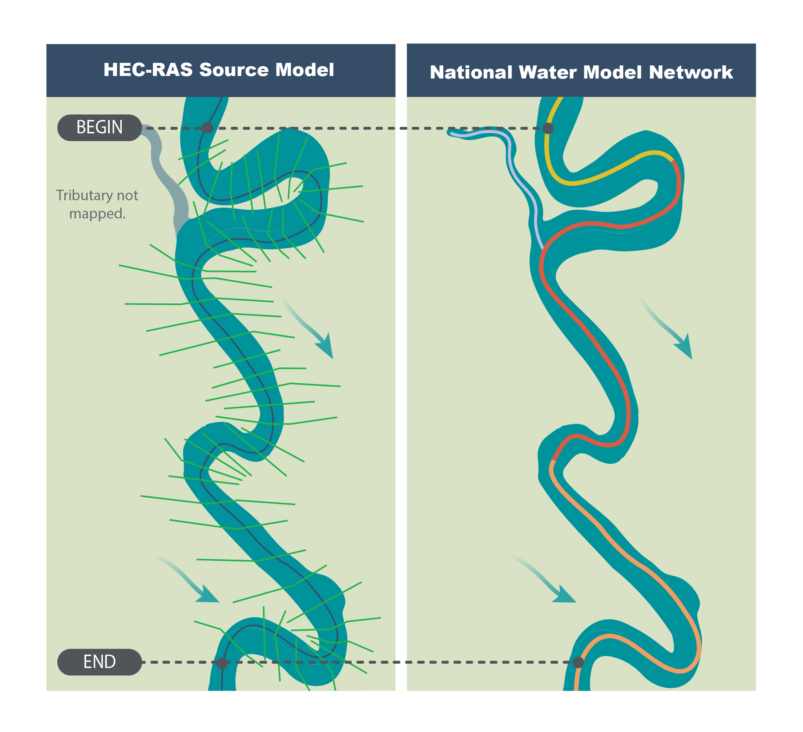
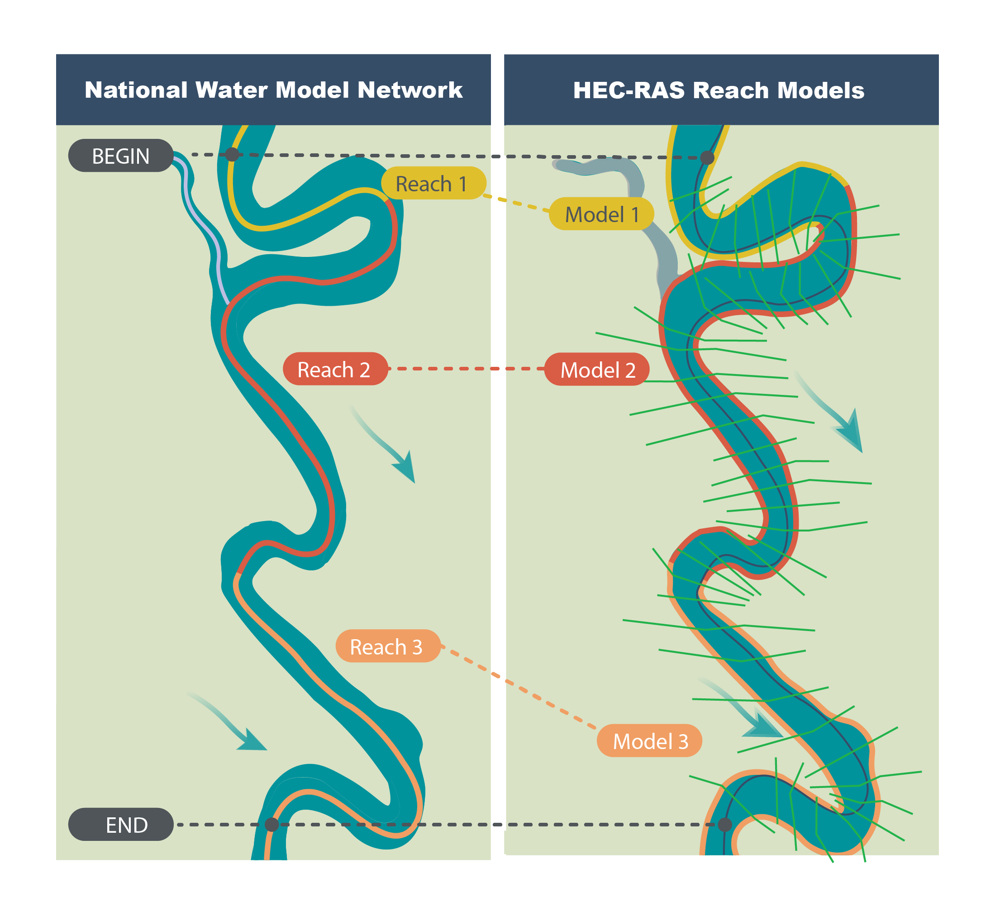
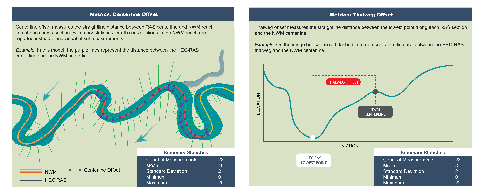
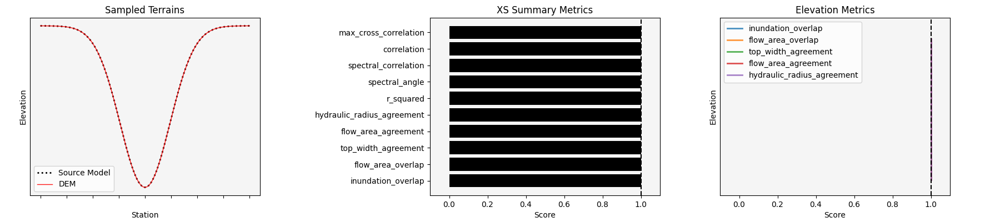
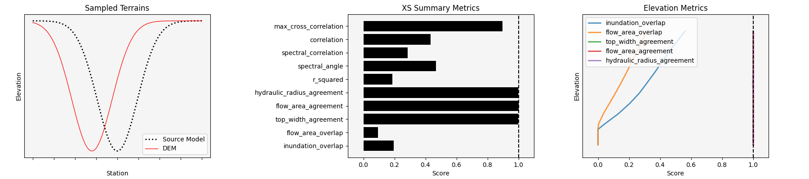
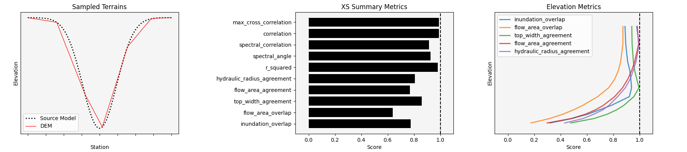

Technical Summary#
The following steps outline a typical workflow for setting up a HEC-RAS model for use in FIM and scenario production.
1 - Model identification and data extraction#
(relevant endpoints: ras_to_gpkg)
When ripple1d is presented with a HEC-RAS project folder, it scans the directory for a complete set of HEC-RAS project files. If a valid set is found, ripple1d then exports the spatial extents of the cross-sections, river centerline, structures, and junctions (along with their associated metadata) to a geopackage file.
2 - Model and NWM network conflation#
(relevant endpoints: conflate_model, compute_conflation_metrics)
{kind=link}

The upstream and downstream limits of HEC-RAS models rarely align with those of NWM reaches. Conflating in ripple1d is the process of associating sections of HEC-RAS models with NWM reaches. To make this association, ripple1d selects NWM reaches near the upstream and downstream boundaries of the HEC-RAS model and traverses the NWM network between them, marking all reaches encounters. For each of those NWM reaches, the utility identifies an upstream cross-section as the HEC-RAS cross-section that intersects the reach closest to its upstream end. It identifies a downstream cross-section as the HEC-RAS cross-section directly downstream of the HEC-RAS cross-section that intersects the reach closest to the downstream end. All cross-sections between the upstream and downstream cross-sections are marked as associated with the NWM reach.
{kind=link}

As a part of the conflation process, ripple1d records a set of metrics that may be used to assess how well the HEC-RAS model and NWM reaches agree. These metrics are saved in a JSON file within the HEC-RAS model directory, and definitions for each of the JSON fields are provided below.
Cross-sectional metrics. These metrics quantify the degree of alignment between the NWM reach centerline and the HEC-RAS model. The metrics below are measured at each HEC-RAS cross-section and summary statistics are reported in the conflation metrics output.
centerline_offset measures the straightline distance between RAS centerline and NWM reach line
thalweg_offset measures the straightline distance between lowest point along each RAS section and NWM reach line
{kind=link}

Length metrics. These metrics assess centerline length differences between HEC-RAS and the NWM reaches.
ras is the distance along the RAS centerline between upstream and downstream cross-section
network is the distance along the NWM reach between upstream and downstream cross-section
network_to_ras_ratio is the network length divided by ras length

Coverage metrics. These metrics quantify the portion of the NWM reach between the upstream and downstream cross-section.
start is the ratio of NWM reach length that occurs u/s of the upstream cross-section
end is the ratio of NWM reach length that occurs u/s of the downstream cross-section

3 - Sub model creation#
(relevant endpoints: extract_submodel, create_ras_terrain)
Once NWM reaches have been associated with relevant parts of the HEC-RAS model, a new HEC-RAS sub model specific to each NWM reach will be created. Rippl1d copies geometry between source HEC-RAS model and submodel so that the submodel produces water surface elevation predictions consistent with the original engineer-certified model. For mapping inundation extents, however, ripple1d downloads newer terrain to reflect existing conditions. You can use terrain from any virtual raster source, but by default, ripple1d will download a 1/3 arcsecond DEM from USGS
As part of terrain generation, a suite of metrics are generated to quantify the agreement of the newly generated DEM terrain and the source model cross-section geometry. Metrics are first generated for each cross-section at a set of water surface elevations ranging from the section invert to the lower of the two source model section endpoints. All metrics (except for residual summary statistics) are aggregated to the cross-section level by averaging across all measured stages. Another set of shape metrics as well as residual summary statistics are computed for the whole cross-section. All cross-section metrics (except for residual summary statistics) are aggregated to the model level by averaging across all cross-sections.
Example Cross-Sections and Their Metrics
Perfectly Aligned
{kind=link}

Noisy

Vertically Offset

Horizontally Offset
{kind=link}

Squeezed

Truncated

Low Fidelity
{kind=link}

Complete Misalignment

Metric Descriptions and Interpretations
Residual Summary Statistics These statistics summarize the difference between source model and DEM elevations at each cross-section vertex. These metrics can be used to assess the magnitude of difference between the two sections, however, since they are not scaled, acceptable ranges will vary from river to river. (Note: normalized RMSE is RMSE divided by the interquartile range and attempts to be a scaled error metric)
Inundation Overlap The intersection of the wetted top widths divided by the union of the wetted top widths (closer to 1 is better). This metric can be used to determine spatially explicit agreement of inundation. A good example is shown in the horizontally offset example above.
Top-Width Agreement Calculated as one minus the symmetric mean absolute percentage error (sMAPE) of the source model wetted top-width and the DEM wetted top-width (closer to 1 is better). This metric is a non-spatially explicit version of inundation overlap. A good example is shown in the horizontally offset example above as well as the squeezed example.
Flow Area Overlap The intersection of the flow areas divided by the union of the flow areas (closer to 1 is better). This metric can be used to determine spatially explicit agreement of the cross-section area. A good example is shown in the horizontally offset example above.
Flow Area Agreement Calculated as one minus the sMAPE of the source model flow area and the DEM flow area (closer to 1 is better). This metric is a non-spatially explicit version of flow area overlap. A good example is shown in the horizontally offset example above as well as the squeezed example.
Hydraulic Radius Agreement Calculated as one minus the sMAPE of the source model hydraulic radius and the DEM hydarulic radius (closer to 1 is better). This metric captures some of how well the hydarulic characteristics of the sections agree.
Correlation Pearson’s correlation between the source model and DEM cross-sections (closer to 1 is better). This metric captures how well the shape of the two sections match.
Max Cross-Correlation The maximum Pearson’s correlation between the source model and DEM cross-sections across all horizontal shifts of the DEM section (closer to 1 is better). This metric captures how well the shape of the two sections match, however, it is insensitive to horizontal shifts in elevations. Compare to correlation in the horizontal shift example above.
Spectral Correlation Spectral correlation between source model and DEM cross-sections, as defined by the HydroErr library (BYU-Hydroinformatics/HydroErr). Furthermore the metric has been transformed to range 0-1 and so that values closer to 1 are better. This metric captures how well the shape of the two sections match.
Spectral Angle Spectral angle between source model and DEM cross-sections, as defined by the HydroErr library (BYU-Hydroinformatics/HydroErr). Furthermore the metric has been transformed to range 0-1 and so that values closer to 1 are better. This metric captures how well the shape of the two sections match.
R-Squared Coefficient of determination between the source model and DEM elevation series (closer to 1 is better). This metric captures how well the shape of the two sections match.
Thalweg Elevation Difference Source model invert minus the DEM invert/ Values closer to 0 are better, negative values reflect a higher DEM invert, and positive values reflect a higher source model invert. Since this metric is not scaled, acceptable ranges will vary from river to river.
4 - Scenario development and FIM pre-processing#
(relevant endpoints: create_model_run_normal_depth, run_incremental_normal_depth, run_known_wse, create_fim_lib)
Once submodel geometry has been set up, you can run various discharges through the model and record the results. Ripple1d has several tools to develop scenarios for a NWM reach.
Initial Normal Depth Run. Discharges ranging from 0.9 times the reach high flow threshold to 1.2 times the reach 1% AEP discharge will be incrementally run through the reach submodel, and their associated flow depths at each cross-section are recorded. If the source model min flow is lower than 0.9 times the high flow threshold or the source model max flow is higher than 1.2 times the 1% AEP discharge, those flow bounds will be used instead
Regularized Normal Depth Run. After the initial depth-discharge curve has been established, ripple1d will attempt to generate a new depth-discharge curve at regular depth intervals. Discharges determined by interpolating a regular depth increment along the initial depth-discharge curve will be incrementally run through the model, and the new curve will be recorded.
Known Water Surface Elevation Run. An advantage of HEC-RAS over lower-complexity FIM methods is its ability to consider downstream hydraulic conditions. ripple1d pre-processes scenarios for a range of conditions by iterating the downstream boundary condition over a range of water surface elevations.
Ripple1d generates HEC-RAS inundation depth grids for each of the known water surface elevation runs. These grids are cached along with their associated discharges and downstream conditions so that reach-scale FIM may be retrieved as soon as a reach forecast is released.